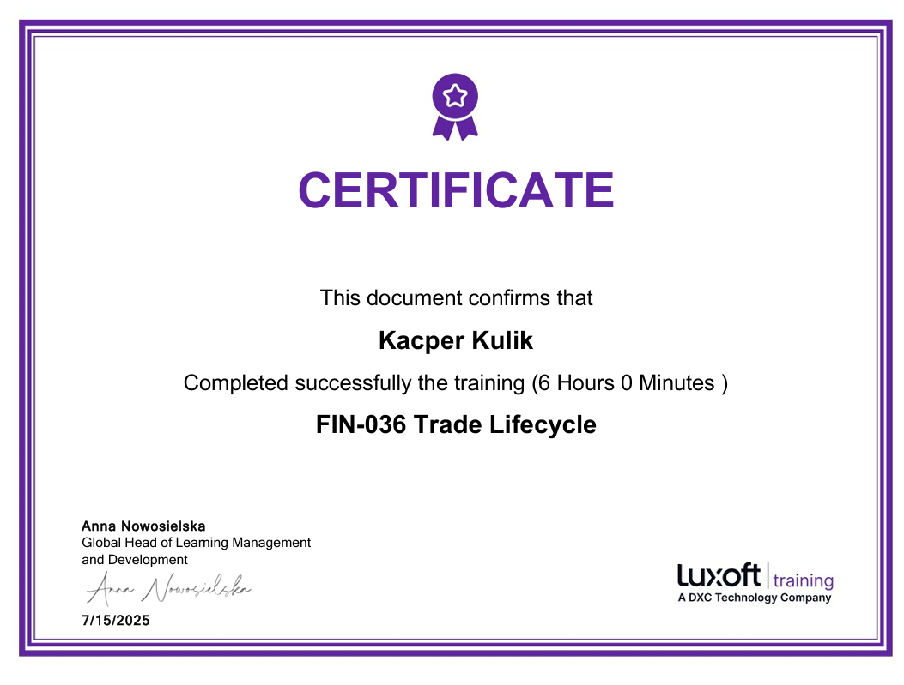
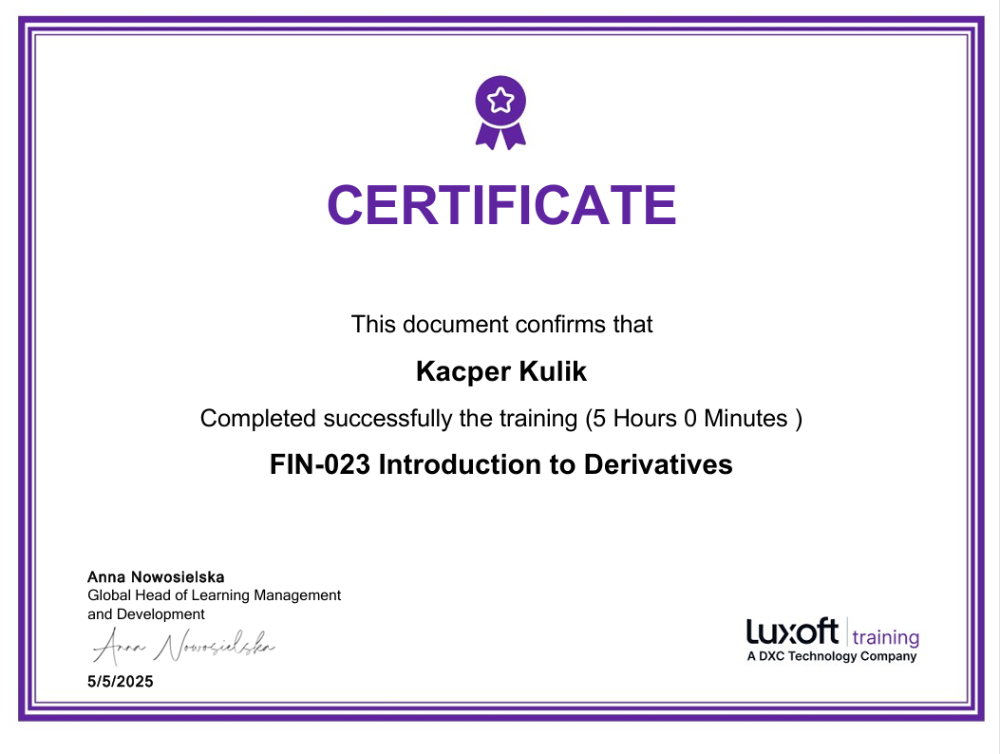
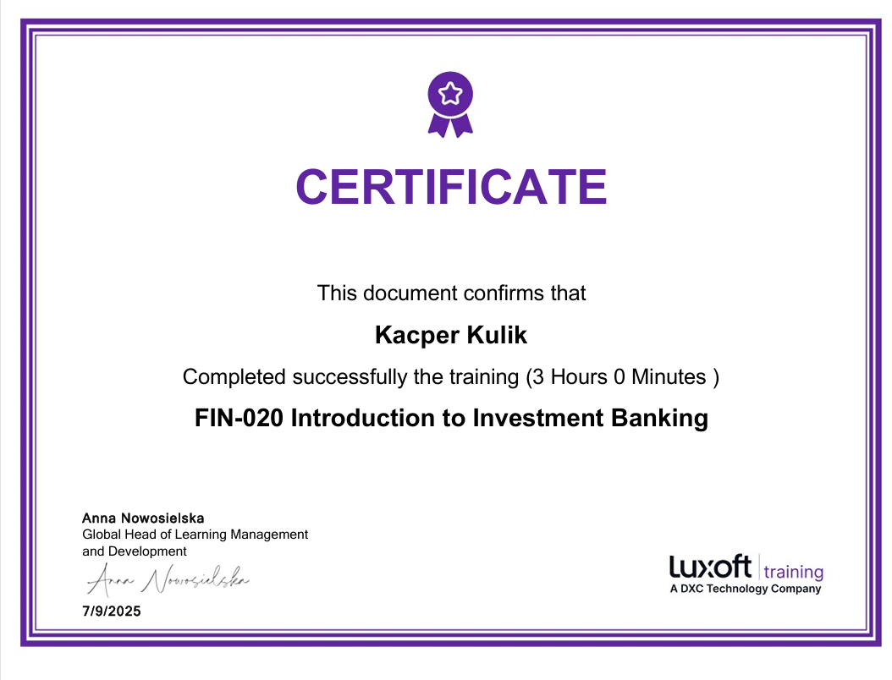

Skills, Education & Certifications
Technical stack across software engineering, software testing, data libraries, and banking payment infrastructure.
Technical Skills
Programming Languages
Object-oriented design, performance-critical C++, Python scripting & ML, foundational SQL, and legacy IBM macros.
Testing & Engineering Tools
Acceptance and integration testing, CI pipelines, sanction screening, issue tracking, and version control.
Libraries & Platforms
Scientific computing, predictive machine learning pipelines, real-time 3D engine systems, and automated trading platforms.
Banking & Payments Domain
Payment messaging standards, transaction verification, defect investigation, and institutional trade lifecycle concepts.
Education
MSc in Computer Science
University of the National Education Commission, Kraków
Bachelor of Engineering in Computer Science
Polish grading scale (4.0 / 5.0)
Banking Certifications — Luxoft Training (2025)

Trade Lifecycle
Order capture, execution, clearing, settlement, reconciliation, collateral management, and front/middle/back-office workflows.

Introduction to Derivatives
Futures, forwards, options, and swaps — valuation concepts, hedging mechanics, and exchange-traded vs. OTC instruments.

Introduction to Investment Banking
Capital markets foundations, M&A advisory, equity/debt issuance, due diligence, and corporate valuation methodologies.